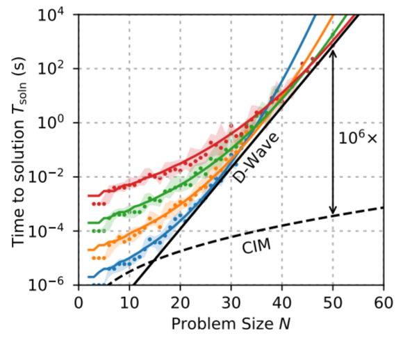
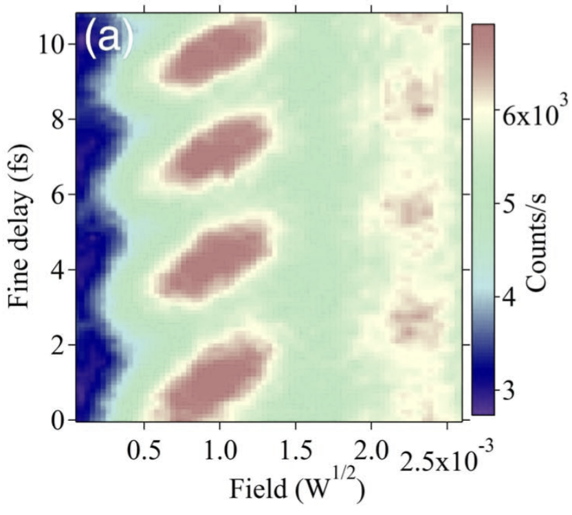
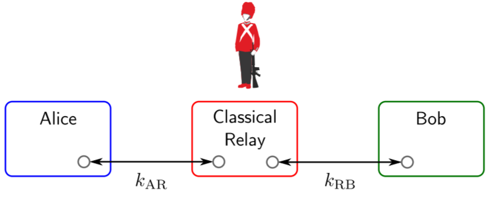
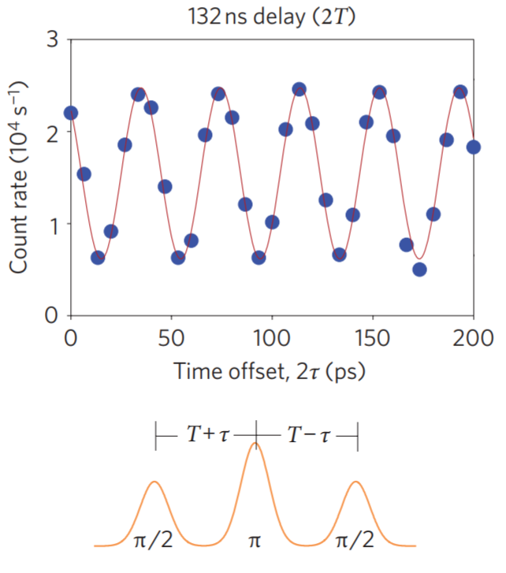

Publications
2023
A. Senanian, L.G. Wright, P.F. Wade, H.K. Doyle, P.L. McMahon
Programmable large-scale simulation of bosonic transport in optical synthetic frequency lattices
Nature Physics (2023) | arXiv
Programmable large-scale simulation of bosonic transport in optical synthetic frequency lattices
Nature Physics (2023) | arXiv
T. Wang*, M.M. Sohoni*, L.G. Wright, M.M. Stein, S.-Y. Ma, T. Onodera, M. Anderson, P.L. McMahon
Image sensing with multilayer, nonlinear optical neural networks
Nature Photonics 17, 408 - 415 (2023) | arXiv | code repo
Image sensing with multilayer, nonlinear optical neural networks
Nature Photonics 17, 408 - 415 (2023) | arXiv | code repo
 M.G. Anderson, S.-Y. Ma, T. Wang, L.G. Wright, P.L. McMahon
M.G. Anderson, S.-Y. Ma, T. Wang, L.G. Wright, P.L. McMahonOptical Transformers
arXiv:2302.10360 (2023)
2022
N. Mohseni, P.L. McMahon*, T. Byrnes*
Ising machines as hardware solvers of combinatorial optimization problems
Nature Reviews Physics 4, 363 - 379 (2022) | arXiv
Ising machines as hardware solvers of combinatorial optimization problems
Nature Reviews Physics 4, 363 - 379 (2022) | arXiv
 L.G. Wright*, T. Onodera*, M.M. Stein, T. Wang, D.T. Schachter, Z. Hu, P.L. McMahon
L.G. Wright*, T. Onodera*, M.M. Stein, T. Wang, D.T. Schachter, Z. Hu, P.L. McMahonDeep physical neural networks trained with backpropagation
Nature 601, 549 - 555 (2022) | arXiv | code repo
E. Rosenberg, P. Ginsparg, P.L. McMahon
Experimental error mitigation using linear rescaling for variational quantum eigensolving with up to 20 qubits
Quantum Science and Technology 7, 015024 (2022) | arXiv | code repo
Experimental error mitigation using linear rescaling for variational quantum eigensolving with up to 20 qubits
Quantum Science and Technology 7, 015024 (2022) | arXiv | code repo
T. Wang, S.-Y. Ma, L.G. Wright, T. Onodera, B. Richard, P.L. McMahon
An optical neural network using less than 1 photon per multiplication
Nature Communications 13, 123 (2022) | arXiv | code repo
An optical neural network using less than 1 photon per multiplication
Nature Communications 13, 123 (2022) | arXiv | code repo
2021
P. Cha, P. Ginsparg, F. Wu, J. Carrasquilla, P.L. McMahon, E.-A. Kim
Attention-based quantum tomography
Machine Learning: Science and Technology 3, 01LT01 (2021) | arXiv
Attention-based quantum tomography
Machine Learning: Science and Technology 3, 01LT01 (2021) | arXiv
2020
R. Yanagimoto*, T. Onodera*, E. Ng, L.G. Wright, P.L. McMahon, H. Mabuchi
Engineering a Kerr-based Deterministic Cubic Phase Gate via Gaussian Operations
Physical Review Letters 124, 240503 (2020) | arXiv
Engineering a Kerr-based Deterministic Cubic Phase Gate via Gaussian Operations
Physical Review Letters 124, 240503 (2020) | arXiv
T. Onodera*, E. Ng*, P.L. McMahon
A quantum annealer with fully programmable all-to-all coupling via Floquet engineering
npj Quantum Information 6, 48 (2020) | arXiv
A quantum annealer with fully programmable all-to-all coupling via Floquet engineering
npj Quantum Information 6, 48 (2020) | arXiv
2019
L.G. Wright, P.L. McMahon
The Capacity of Quantum Neural Networks
arXiv:1908.01364 (2019) | poster | poster video summary
The Capacity of Quantum Neural Networks
arXiv:1908.01364 (2019) | poster | poster video summary
R. Yanagimoto, P.L. McMahon, E. Ng, T. Onodera, H. Mabuchi
Embedding entanglement generation within a measurement-feedback coherent Ising machine
arXiv:1906.04902 (2019)
Embedding entanglement generation within a measurement-feedback coherent Ising machine
arXiv:1906.04902 (2019)
 R.M. Parrish, E.G. Hohenstein, P.L. McMahon, T.J. Martinez
R.M. Parrish, E.G. Hohenstein, P.L. McMahon, T.J. MartinezQuantum Computation of Electronic Transitions Using a Variational Quantum Eigensolver
Physical Review Letters 122, 230401 (2019) | arXiv

R. Hamerly*, T. Inagaki*, P.L. McMahon*, D. Venturelli, A. Marandi, T. Onodera, E. Ng, C. Langrock, K. Inaba, T. Honjo, K. Enbutsu, T. Umeki, R. Kasahara, S. Utsunomiya, S. Kako, K. Kawarabayashi, R.L. Byer, M.M. Fejer, H. Mabuchi, D. Englund, E. Rieffel, H. Takesue, Y. Yamamoto
Experimental investigation of performance differences between Coherent Ising Machines and a quantum annealer
Science Advances 5, 5, eaau0823 (2019) | arXiv
Experimental investigation of performance differences between Coherent Ising Machines and a quantum annealer
Science Advances 5, 5, eaau0823 (2019) | arXiv
C.J. Layton, P.L. McMahon, W.J. Greenleaf
Large-scale, quantitative protein assays on a high-throughput DNA sequencing chip
Molecular Cell 73, 5, 1075-1082 (2019) | bioRxiv
Large-scale, quantitative protein assays on a high-throughput DNA sequencing chip
Molecular Cell 73, 5, 1075-1082 (2019) | bioRxiv
T. Leleu, Y. Yamamoto, P.L. McMahon, K. Aihara
Destabilization of Local Minima in Analog Spin Systems by Correction of Amplitude Heterogeneity
Physical Review Letters 122, 040607 (2019) | arXiv
Destabilization of Local Minima in Analog Spin Systems by Correction of Amplitude Heterogeneity
Physical Review Letters 122, 040607 (2019) | arXiv
2018
T. Onodera*, E. Ng*, N. Lörch, A. Yamamura, R. Hamerly, P.L. McMahon, A. Marandi, H. Mabuchi
Nonlinear Quantum Behavior of Ultrashort-Pulse Optical Parametric Oscillators
arXiv:1811.10583 (2018)
Nonlinear Quantum Behavior of Ultrashort-Pulse Optical Parametric Oscillators
arXiv:1811.10583 (2018)
2017
S. Puri, P.L. McMahon, Y. Yamamoto
Universal logic gates for quantum-dot electron-spin qubits using trapped quantum-well exciton polaritons
Physical Review B 95, 125410 (2017)
Universal logic gates for quantum-dot electron-spin qubits using trapped quantum-well exciton polaritons
Physical Review B 95, 125410 (2017)
K.G. Lagoudakis, K.A. Fischer, T. Sarmiento, P.L. McMahon, M. Radulaski, J.L. Zhang, Y. Kelaita, C. Dory, K. Müller, J. Vuckovic
Observation of Mollow Triplets with Tunable Interactions in Double Lambda Systems of Individual Hole Spins
Physical Review Letters 118, 013602 (2017)
Observation of Mollow Triplets with Tunable Interactions in Double Lambda Systems of Individual Hole Spins
Physical Review Letters 118, 013602 (2017)
R. She*, A.K. Chakravarty*, C.J. Layton*, L.M. Chircus, J.O.L. Andreasson, N. Damaraju, P.L. McMahon, J.D. Buenrostro, D.F. Jarosz, W.J. Greenleaf
Comprehensive and quantitative mapping of RNA–protein interactions across a transcribed eukaryotic genome
Proceedings of the National Academy of Sciences 114, 14, 3619 - 3624 (2017)
Comprehensive and quantitative mapping of RNA–protein interactions across a transcribed eukaryotic genome
Proceedings of the National Academy of Sciences 114, 14, 3619 - 3624 (2017)
2016

K.G. Lagoudakis*, P.L. McMahon*, C. Dory*, K.A. Fischer, K. Müller, V. Borish, D. Dalacu, P.J. Poole, M.E. Reimer, V. Zwiller, Y. Yamamoto, J. Vuckovic
Ultrafast coherent manipulation of trions in site-controlled nanowire quantum dots
Optica 3, 12, 1430 - 1435 (2016)
Ultrafast coherent manipulation of trions in site-controlled nanowire quantum dots
Optica 3, 12, 1430 - 1435 (2016)
P.L. McMahon*, A. Marandi*, Y. Haribara, R. Hamerly, C. Langrock, S. Tamate, T. Inagaki, H. Takesue, S. Utsunomiya, K. Aihara, R.L. Byer, M.M. Fejer, H. Mabuchi, Y. Yamamoto
A fully programmable 100-spin coherent Ising machine with all-to-all connections
Science 354, No. 6312, 614 - 617 (2016)
A fully programmable 100-spin coherent Ising machine with all-to-all connections
Science 354, No. 6312, 614 - 617 (2016)
T. Inagaki, Y. Haribara, K. Igarashi, T. Sonobe, S. Tamate, T. Honjo, A. Marandi, P.L. McMahon, T. Umeki, K. Enbutsu, O. Tadanaga, H. Takenouchi, K. Aihara, K. Kawarabayashi, K. Inoue, S. Utsunomiya, H. Takesue
A coherent Ising machine for 2000-node optimization problems
Science 354, No. 6312, 603 - 606 (2016)
A coherent Ising machine for 2000-node optimization problems
Science 354, No. 6312, 603 - 606 (2016)
 K.G. Lagoudakis*, P.L. McMahon*, K.A. Fischer, S. Puri, K. Müller, D. Dalacu, P.J. Poole, M.E. Reimer, V. Zwiller, Y. Yamamoto, J. Vuckovic
K.G. Lagoudakis*, P.L. McMahon*, K.A. Fischer, S. Puri, K. Müller, D. Dalacu, P.J. Poole, M.E. Reimer, V. Zwiller, Y. Yamamoto, J. VuckovicInitialization of a spin qubit in a site-controlled nanowire quantum dot
New Journal of Physics 18 053024 (2016)
2015

P.L. McMahon, K. De Greve
Towards Quantum Repeaters with Solid-State Qubits: Spin-Photon Entanglement Generation using Self-Assembled Quantum Dots
In Engineering the Atom-Photon Interaction (Springer-Verlag, eds. A. Predojevic and M. W. Mitchell) | arXiv:1501.03535 (2015)
Towards Quantum Repeaters with Solid-State Qubits: Spin-Photon Entanglement Generation using Self-Assembled Quantum Dots
In Engineering the Atom-Photon Interaction (Springer-Verlag, eds. A. Predojevic and M. W. Mitchell) | arXiv:1501.03535 (2015)
2014
S. Puri*, P.L. McMahon*, Y. Yamamoto
Single-shot quantum nondemolition measurement of a quantum-dot electron spin using cavity exciton-polaritons
Physical Review B 90, 155421 (2014)
Single-shot quantum nondemolition measurement of a quantum-dot electron spin using cavity exciton-polaritons
Physical Review B 90, 155421 (2014)
2013
K. De Greve, D. Press, P.L. McMahon, Y. Yamamoto
Ultrafast optical control of individual quantum dot spin qubits
Reports on Progress in Physics 76, 092501 (2013)
Ultrafast optical control of individual quantum dot spin qubits
Reports on Progress in Physics 76, 092501 (2013)
K. De Greve*, P.L. McMahon*, L. Yu, J.S. Pelc, C. Jones, C.M. Natarajan, N.Y. Kim, E. Abe, S. Maier, C. Schneider, M. Kamp, S. Hoefling, R.H. Hadfield, A. Forchel, M.M. Fejer, Y. Yamamoto
Complete tomography of a high-fidelity solid-state entangled spin–photon qubit pair
Nature Communications 4, 2228 (2013)
Complete tomography of a high-fidelity solid-state entangled spin–photon qubit pair
Nature Communications 4, 2228 (2013)
2012
K. De Greve, L. Yu*, P.L. McMahon*, J.S. Pelc*, C.M. Natarajan, N.Y. Kim, E. Abe, S. Maier, C. Schneider, M. Kamp, S. Hoefling, R.H. Hadfield, A. Forchel, M.M. Fejer, Y. Yamamoto
Quantum-dot spin-photon entanglement via frequency downconversion to telecom wavelength
Nature 491, 421 - 425 (2012)
Quantum-dot spin-photon entanglement via frequency downconversion to telecom wavelength
Nature 491, 421 - 425 (2012)
J.S. Pelc, L. Yu*, K. De Greve*, P.L. McMahon*, C.M. Natarajan, V. Esfandyarpour, S. Maier, C. Schneider, M. Kamp, S. Hoefling, R.H. Hadfield, A. Forchel, Y. Yamamoto, M.M. Fejer
Downconversion quantum interface for a single quantum dot spin and 1550-nm single-photon channel
Optics Express 20, 25, 27510-27519 (2012)
Downconversion quantum interface for a single quantum dot spin and 1550-nm single-photon channel
Optics Express 20, 25, 27510-27519 (2012)
N.C. Jones, R. Van Meter, A.G. Fowler, P.L. McMahon, J. Kim, T.D. Ladd, Y. Yamamoto
Layered Architecture for Quantum Computing
Physical Review X 2, 031007 (2012)
Layered Architecture for Quantum Computing
Physical Review X 2, 031007 (2012)
N.C. Jones, J.D. Whitfield, P.L. McMahon, M.-H. Yung, R. Van Meter, A. Aspuru-Guzik, Y. Yamamoto
Faster quantum chemistry simulation on fault-tolerant quantum computers
New Journal of Physics 14, 115023 (2012)
Faster quantum chemistry simulation on fault-tolerant quantum computers
New Journal of Physics 14, 115023 (2012)
A.P.V. Siemion, G.C. Bower, G. Foster, P.L. McMahon, M.I. Wagner, D. Werthimer, D. Backer, J. Cordes, J. van Leeuwen
The Allen Telescope Array Fly's Eye Survey for Fast Radio Transients
Astrophysical Journal 744, 109 (2012)
The Allen Telescope Array Fly's Eye Survey for Fast Radio Transients
Astrophysical Journal 744, 109 (2012)
2011
K. De Greve, P.L. McMahon, D. Press, T.D. Ladd, D. Bisping, C. Schneider, M. Kamp, L. Worschech, S. Hoefling, A. Forchel, Y. Yamamoto
Coherent control and suppressed nuclear feedback of a single quantum dot hole qubit
Nature Physics 7, 872 - 878 (2011)
Coherent control and suppressed nuclear feedback of a single quantum dot hole qubit
Nature Physics 7, 872 - 878 (2011)
H.-H. Kuo, J.-H. Chu, S.C. Riggs, L. Yu, P.L. McMahon, K. De Greve, Y. Yamamoto, J.G. Analytis, I.R. Fisher
Possible origin of the nonmonotonic doping dependence of the in-plane resistivity anisotropy of Ba(Fe$_{1-x}T_x$)$_2$As$_2$ ($T$=Co, Ni and Cu)
Physical Review B 84, 054540 (2011)
Possible origin of the nonmonotonic doping dependence of the in-plane resistivity anisotropy of Ba(Fe$_{1-x}T_x$)$_2$As$_2$ ($T$=Co, Ni and Cu)
Physical Review B 84, 054540 (2011)
2010
T.D. Ladd, D. Press, K. De Greve, P.L. McMahon, B. Friess, C. Schneider, M. Kamp, S. Hoefling, A. Forchel, Y. Yamamoto
Pulsed Nuclear Pumping and Spin Diffusion in a Single Charged Quantum Dot
Physical Review Letters 105, 107401 (2010)
Pulsed Nuclear Pumping and Spin Diffusion in a Single Charged Quantum Dot
Physical Review Letters 105, 107401 (2010)
 T.D. Ladd, D. Press, K. De Greve, P.L. McMahon, B. Friess, C. Schneider, M. Kamp, S. Hoefling, A. Forchel, Y. Yamamoto
T.D. Ladd, D. Press, K. De Greve, P.L. McMahon, B. Friess, C. Schneider, M. Kamp, S. Hoefling, A. Forchel, Y. YamamotoNuclear Feedback in a Single Quantum Dot under Pulsed Optical Control
arXiv:1008.0912 (2010) (Complement to PRL doi:10.1103/PhysRevLett.105.107401 on the same topic.)
J.-H. Chu, J.G. Analytis, K. De Greve, P.L. McMahon, Z. Islam, Y. Yamamoto, I.R. Fisher
In-Plane Resistivity Anisotropy in an Underdoped Iron Arsenide Superconductor
Science 329, No. 5993, 824 - 826 (2010)
In-Plane Resistivity Anisotropy in an Underdoped Iron Arsenide Superconductor
Science 329, No. 5993, 824 - 826 (2010)

D. Press, K. De Greve, P.L. McMahon, T.D. Ladd, B. Friess, C. Schneider, M. Kamp, S. Hoefling, A. Forchel, Y. Yamamoto
Ultrafast optical spin echo in a single quantum dot
Nature Photonics 4, 367 - 370 (2010)
Ultrafast optical spin echo in a single quantum dot
Nature Photonics 4, 367 - 370 (2010)
K. Stevens, H. Chen, T. Filiba, P. McMahon, Y.S. Song
SeqHive: A Reconfigurable Computer Cluster for Genome Re-sequencing
Proceedings of the IEEE Conference on Field Programmable Logic and Applications (FPL), 31 August - 2 September 2010
SeqHive: A Reconfigurable Computer Cluster for Genome Re-sequencing
Proceedings of the IEEE Conference on Field Programmable Logic and Applications (FPL), 31 August - 2 September 2010
S.K. Kim, P.L. McMahon, K. Olukotun
A Large-scale Architecture for Restricted Boltzmann Machines
Proceedings of the IEEE Symposium on Field-Programmable Custom Computing Machines (FCCM), 2 - 4 May 2010
A Large-scale Architecture for Restricted Boltzmann Machines
Proceedings of the IEEE Symposium on Field-Programmable Custom Computing Machines (FCCM), 2 - 4 May 2010
M.J. Keith, A. Jameson, W. Van Straten, M. Bailes, S. Johnston, M. Kramer, A. Possenti, S.D. Bates, N.D.R. Bhat, M. Burgay, S. Burke-Spolaor, N. D'Amico, L. Levin, P.L. McMahon, S. Milia, B.W. Stappers
The High Time Resolution Universe Pulsar Survey – I. System configuration and initial discoveries
Monthly Notices of the Royal Astronomical Society 409, 2, pp. 619-627 (2010)
The High Time Resolution Universe Pulsar Survey – I. System configuration and initial discoveries
Monthly Notices of the Royal Astronomical Society 409, 2, pp. 619-627 (2010)
A. Siemion, J. Von Korff, P. McMahon, E. Korpela, D. Werthimer, D. Anderson, G. Bower, J. Cobb, G. Foster, M. Lebofsky, J. van Leeuwen, W. Mallard, M. Wagner
New SETI Sky Surveys for Radio Pulses
Acta Astronautica 67, 11 - 12 (2010)
New SETI Sky Surveys for Radio Pulses
Acta Astronautica 67, 11 - 12 (2010)
2009
S.K. Kim, L. McAfee, P.L. McMahon, K. Olukotun
A Highly Scalable Restricted Boltzmann Machine FPGA Implementation
Proceedings of the IEEE Conference on Field Programmable Logic and Applications (FPL), 31 August - 2 September 2009
A Highly Scalable Restricted Boltzmann Machine FPGA Implementation
Proceedings of the IEEE Conference on Field Programmable Logic and Applications (FPL), 31 August - 2 September 2009
2008
A. Parsons, D. Backer, H. Chen, P. Droz, T. Filiba, D. MacMahon, J. Manley, P. McMahon, A. Parsa, A. Siemion, D. Werthimer, M. Wright
A Scalable Correlator Architecture Based on Modular FPGA Hardware, Reuseable Gateware, and Data Packetization
The Publications of the Astronomical Society of the Pacific 120, 873, pp. 1207-1221 (2008)
A Scalable Correlator Architecture Based on Modular FPGA Hardware, Reuseable Gateware, and Data Packetization
The Publications of the Astronomical Society of the Pacific 120, 873, pp. 1207-1221 (2008)